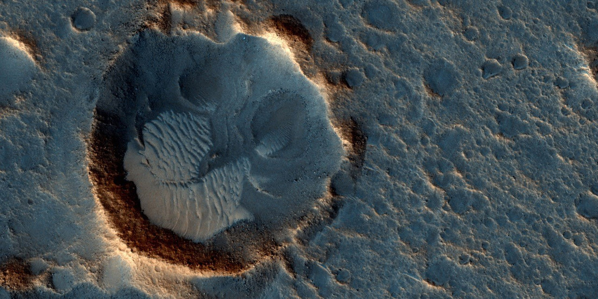
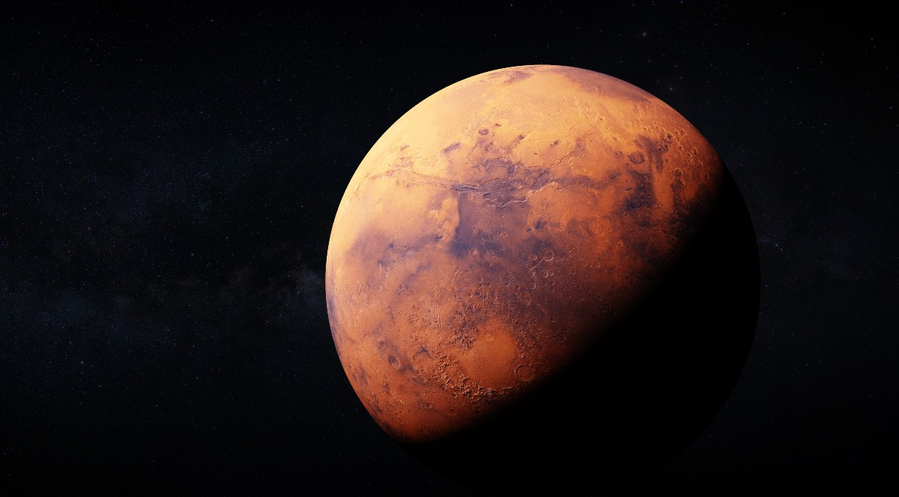

Mars
Terrestrial Planet
Mars is the fourth planet from the Sun and the second-smallest planet in the Solar System. Currently, there are investigations accessing the past habitability of Mars as well as the possibility of extant life. Our goal as the Weather on Mars group is to provide available and up-to-date information on NASA rovers that have traveled to Mars. The NASA rovers have supplied scientists and engineers with a wealth of information about the red planet


